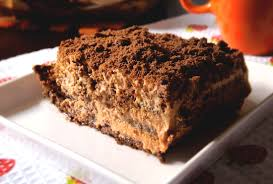
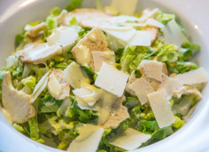

Portfolio

Recipies:
For some of us, looking for recipes was something a little bit boring. But for others it was a great task. However it was difficult to finish it on time, we accomplished it.

Meeting with 4th year:
For the group, meeting with students of 4th year was very interesting. They teached us the topic "healthy food", like for example what a vegetarian or hypertensive person eat.
Meeting with 6th year:
The meating with 6th year, helped us to put prices to our dishes. With their help we improved the calculating prices and costs.

Calculaiting costs:
With our Mathematics teacher Melina.S. we started calculating costs in charts. We learned the difference between direct proportionality and indirect proportionality. For some it was a little bit difficult but for the others it wasn't.

Video:
Doing the video was one of the funniest parts of the project. We learned many things from it. Like for example how to use the Imovie app. Another thing we did was organizing the roles of each member. After that we started to film. It took a lot of time to finish it, but we did.

Critical friends:
With help of our english teacher Elizabeth.C. we sent some mails to students from a teacher called Malcom, from London. Some months later we became their answers. They were very friendly. We all had great fun that day.

Logo:
We did a colorful logo. It's happier than a black and white one. The Bordeaux color is attractive and the green color reminds healthy. The border is green and black to make it more elegant. The lives represente "fresh", the fork and the spoon are for meat and deserts.

El Buen Comer
Panza llena corazón contento

Some of our fotos
-
-
-
- 
-

- 
-

-

-

-

-